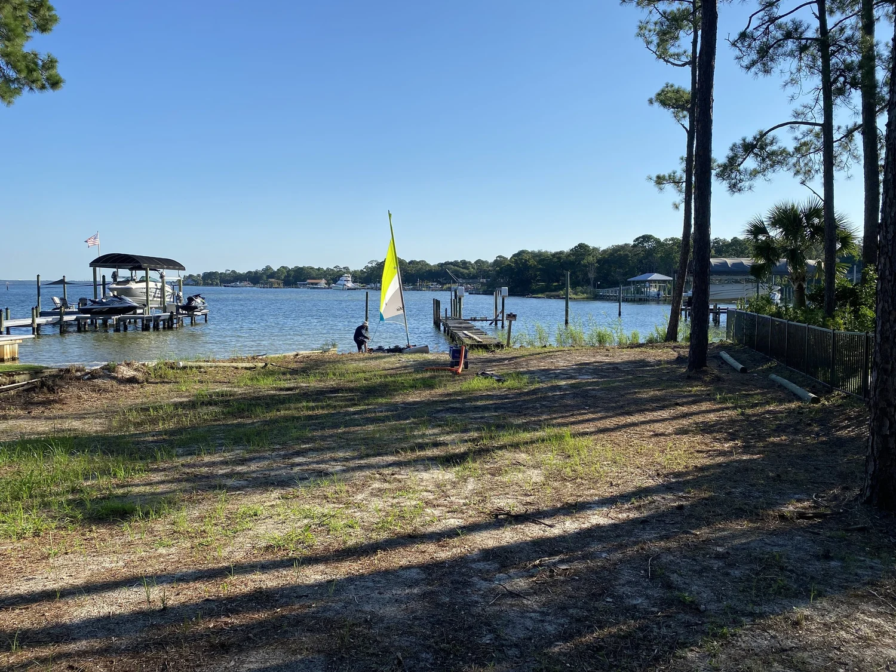
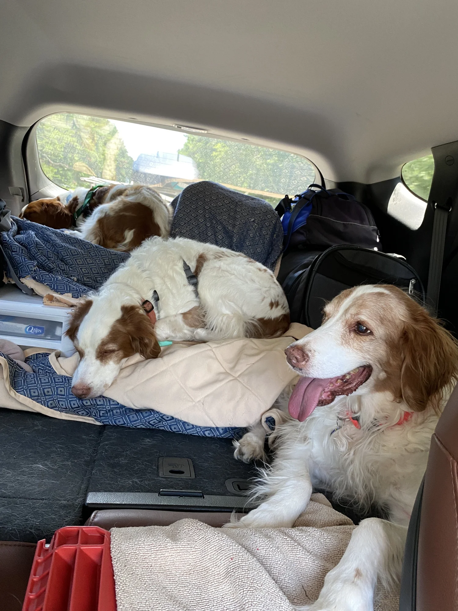
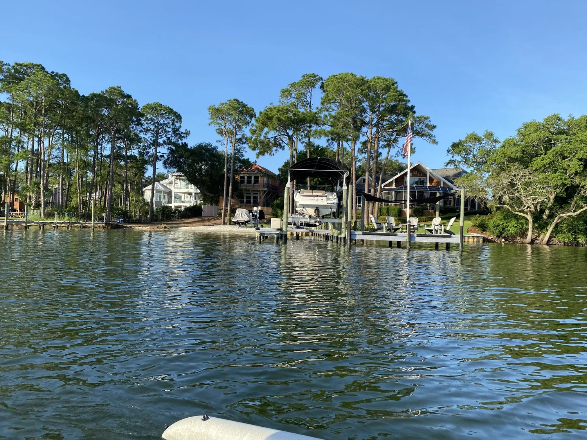

Sailing Our Hobie TI Kayak around Joe's Bayou and Choctawhatchee Bay in Destin, Florida!

We’re sailing in Destin Florida for the next two weeks!
We will sail from Joe’s Bayou, around Choctawhatchee Bay (Choc-ta-hatchie Bay), visit Crab Island, Okaloosa Island, touch land near Elgin Air Force Base, scoot in and out of Destin Harbor, and even try our luck out in the Gulf of Mexico -so stay tuned for that!
 ▶ Watch on YouTube
▶ Watch on YouTubeWatch the video or continue to read. (More trip detail below. More actual sailing on the video.) Feel free to view both and enjoy!
The focus on Day 1 was to get the boat to the water and learn our launch location. This will be my first-time sailing on anything besides a semi-smallish local lake, but Billy grew up here and has many adventures to share.

Billy spent some time showing me Joe’s Bayou, a small body of water that played a major role in his youth. He spent a lot of time there knee boarding, swimming, shrimping with his family, and helping to launch larger boats for fishing excursions. He also experienced a boating accident there that is still with him today in a small way.
We drove 15 hours with three 40-pound dogs.

We drove 15 hours with three 40-pound dogs to Billy’s parents’ house. Fortunately, our trailer rode smoothly; and this time, we didn’t have a flat! (Stuck in the middle of nowhere)
While we stayed with his parents. Family friends graciously allowed us to keep out boat in their back yard. They had a small beach area we could easily use to slide the Hobie into the bay water.

Billy grew up here in Destin, Florida and enjoyed a lifetime of sailing, swimming, and lifeguarding. This was my first time out on these waters and I had lots of questions; but enjoyed every minute.
I wasn’t sure exactly where we were. I mean, Destin, Florida... duh... but I was not familiar with the waterways, landmarks, or land areas.
Our fist day was filled with unpacking everything, and then re-packing what we thought we needed on our Hobie while out on the water. Then we both had a great time out on the water!